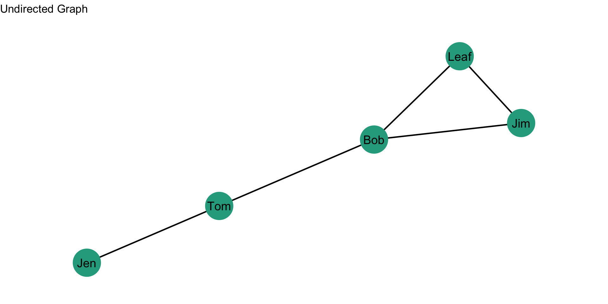

Betweenness Centrality
In the prior chapter, we examined the idea of “centrality” for nodes and “centralization” for graphs, focusing attention on the conceptual aspects of what it means to be central as well as the ways in which we can operationalize the concept using degree centrality and closeness centrality. In this chapter we want to continue thinking about what it means to be central, but through a different conceptual lens: betweenness. Betweenness centrality serves as a powerful indicator of actors who bridge otherwise disconnected parts of a network, offering unique control over the flow of information and resources across network boundaries. Unlike degree centrality, which emphasizes direct ties, or closeness centrality, which identifies actors closest to others, betweenness centrality highlights those who can influence inter-group dynamics. A compelling example is seen in a study by Calderoni (2014), which examined the Italian Mafia network, specifically the Ndrangheta organization. Calderoni found that individuals with high betweenness centrality played pivotal roles in connecting local criminal cells to broader, often international networks. These “connectors” were essential for coordinating illicit activities across regions and facilitating transactions that would otherwise remain confined to isolated groups. For law enforcement, targeting these high-betweenness actors provided a strategic leverage point to disrupt cross-regional collaboration, making them critical targets in efforts to dismantle organized crime networks. By understanding the role of betweenness, crime analysts can better assess how key individuals maintain structural cohesion within social networks.
By the end of this chapter, you should be able to:
- Explain the conceptualization of “centrality” as it pertains to betweenness centrality.
- Calculate betweenness centrality scores for a set of nodes.
- Calculate a betweenness centralization score for a graph.
Case Study: Money Laundering and Betweenness
In a case study examining the role of betweenness centrality in criminal networks, Malm and Bichler (2011) analyzed money laundering to understand how different actors influenced network cohesion and resource flow. Analyzing data from intelligence reports, the authors found that the majority of money laundering in this drug market was self-laundering (where individuals laundered their own illicit earnings), rather than employing specialized professionals. Using betweenness centrality to assess how well-positioned launderers were within the network, Malm and Bichler (2011) found that self-launderers generally exhibited higher betweenness centrality, showing they often acted as key brokers facilitating information flow and transactions across different parts of the network. The findings suggested that targeting individuals with high betweenness centrality, particularly those involved in self-laundering, may be most effective for disrupting drug networks.
Betweenness Centrality Definition
Betweenness centrality is based on the number of shortest paths between two nodes, j and k, that node i resides on. Recall that a path is an edge or sequence of edges that connect two nodes and a geodesic is the shortest path between two nodes.
Undirected Graphs
Betweenness Centrality
For an undirected binary graph, betweenness centrality is:
\[C_B(n_i) = \sum\limits_{j<k} g_{jk}(n_i) / g_{jk}\]
This equation is a bit different from those for degree and closeness centrality. Let’s unpack it:
- The denominator, \(g_{jk}\), is the number of geodesics linking j to k.
- The numerator, \(g_{jk}(n_i)\), is the number of geodesics linking j and k that contain i.
- Betweenness centrality is the ratio of the geodesics between j and k that contain i.
In words, if j has to go through i to reach k, \(j-i-k\), then i will have high betweenness because i is between j and k.
Let’s consider an example. Take a look at this graph:
What are the paths between Jen and Jim?
There are two:
- Jen to Tom to Bob to Jim
- Jen to Tom to Bob to Leaf to Jim
We can see this visually:
Note that Bob is on both of those paths. He is between Jen and Jim on both paths. Note, however, that only one of the paths is a geodesic path (the Jen->Tom->Bob->Jim path). That is because it is shorter.
Now, let’s calculate the betweenness centrality for Bob. The first thing we need to find are the geodesic paths. Then, figure out how many of those geodesic paths contain Bob. We do this by creating a table of geodesic proportions for Bob.
Geodesic Proportions for Bob
| Jen | Tom | Leaf | Jim | |
|---|---|---|---|---|
| Jen | /? | |||
| Tom | ||||
| Leaf | ||||
| Jim |
How many geodesics from Jen to Jim? There is 1 geodesic from Jen to Jim. So, we would just add that to our table:
Geodesic Proportions for Bob
| Jen | Tom | Leaf | Jim | |
|---|---|---|---|---|
| Jen | /1 | |||
| Tom | ||||
| Leaf | ||||
| Jim |
Now, how many geodesics from Jen to Jim include Bob? Bob is on the only geodesic from Jen to Jim. So, we would just add that to our table:
Geodesic Proportions for Bob
| Jen | Tom | Leaf | Jim | |
|---|---|---|---|---|
| Jen | 1/1 | |||
| Tom | ||||
| Leaf | ||||
| Jim |
What about Jen to Tom?
Geodesic Proportions for Bob
| Jen | Tom | Leaf | Jim | |
|---|---|---|---|---|
| Jen | ?/? | 1/1 | ||
| Tom | ||||
| Leaf | ||||
| Jim |
There is 1 geodesic from Jen to Tom, and Bob is not on it. So, that is a 0 for the numerator. We can update the table accordingly:
Geodesic Proportions for Bob
| Jen | Tom | Leaf | Jim | |
|---|---|---|---|---|
| Jen | 0/1 | 1/1 | ||
| Tom | ||||
| Leaf | ||||
| Jim |
Finally, what about Jen to Leaf?
Geodesic Proportions for Bob
| Jen | Tom | Leaf | Jim | |
|---|---|---|---|---|
| Jen | 0/1 | ?/? | 1/1 | |
| Tom | ||||
| Leaf | ||||
| Jim |
Bob is on the geodesic from Jen to Leaf:
Geodesic Proportions for Bob
| Jen | Tom | Leaf | Jim | |
|---|---|---|---|---|
| Jen | 0/1 | 1/1 | 1/1 | |
| Tom | ||||
| Leaf | ||||
| Jim |
Of the geodesics between \(Jen,Tom\), \(Jen,Leaf\), and \(Jen,Tom\), how many include Bob? We just sum the ratios across the row. It gives us 2.
Geodesic Proportions for Bob
| Jen | Tom | Leaf | Jim | SUM | |
|---|---|---|---|---|---|
| Jen | 0/1 | 1/1 | 1/1 | 2 | |
| Tom | |||||
| Leaf | |||||
| Jim |
Now, to finish our calculation for Bob, we need to calculate the geodesics for the rest of the matrix:
Geodesic Proportions for Bob
| Jen | Tom | Leaf | Jim | |
|---|---|---|---|---|
| Jen | 0/1 | 1/1 | 1/1 | |
| Tom | ?/? | ?/? | ||
| Leaf | ?/? | |||
| Jim |
To aid in this, think about the highlighted paths below:
The sum of all these ratios is Bob’s betweenness centrality score:
\[C_B(Bob) = \sum\limits_{j<k} g_{jk}(Bob) / g_{jk}\]
Geodesic Proportions for Bob
| Jen | Tom | Leaf | Jim | SUM | |
|---|---|---|---|---|---|
| Jen | 0/1 | 1/1 | 1/1 | 2 | |
| Tom | 1/1 | 1/1 | 2 | ||
| Leaf | 0/1 | 0 | |||
| Jim | |||||
| TOTAL | 4 |
That sum is 4. Bob’s betweenness centrality score is 4. What does this mean? A score of 4 indicates that Bob occupies a position between two nodes on 4 of the geodesics in the graph.
What about Leaf? We can do the same thing by creating a table of geodesic proportions for Leaf.
Geodesic Proportions for Leaf
| Jen | Tom | Bob | Jim | SUM | |
|---|---|---|---|---|---|
| Jen | ?/? | ?/? | ?/? | ? | |
| Tom | ?/? | ?/? | ? | ||
| Bob | ?/? | ? | |||
| Jim | |||||
| TOTAL | ? |

Based on the plot, we can visually see that Leaf’s betweenness is going to be zero as he is not on any paths between two nodes. We can show this mathematically in the table:
Geodesic Proportions for Leaf
| Jen | Tom | Bob | Jim | SUM | |
|---|---|---|---|---|---|
| Jen | 0/1 | 0/1 | 0/1 | 0 | |
| Tom | 0/1 | 0/1 | 0 | ||
| Bob | 0/1 | 0 | |||
| Jim | |||||
| TOTAL | 0 |
Based on the visual inspection of the plot, can you find two other nodes who will have a betweenness centrality score of 0?
The complete scores are:
| Node | Betweenness |
|---|---|
| Jen | 0 |
| Tom | 3 |
| Bob | 4 |
| Leaf | 0 |
| Jim | 0 |
Standardization
As discussed in the prior chapters, centrality measures are sensitive to the size of the graph, g. In the case of betweenness centrality, having to sum over more nodes will make scores from large networks bigger than scores from smaller networks (because you are just summing over more nodes). This means that we can’t compare betweenness centrality scores across graphs of different sizes. Solution?
Standardize! If we want to compare nodes in different sized graphs, then we just take into account the number of nodes and the maximum possible nodes to which i could be connected. For betweenness centrality, we have to go a step further. We need to account for the number of pairs of nodes that do not include i. In an undirected graph, this is \((g-1))(g-2)/2\).
Thus, we can calculate a standardized betweenness centrality score for an undirected graph as:
\[C'_B(n_i) = \frac{\sum\limits_{j<k} g_{jk}(n_i) / g_{jk}}{[(g-1)(g-2)/2]} = \frac{C_B(n_i)}{[(g-1)(g-2)/2]}\]
So, all we are doing is adjusting each betweenness score by \((g-1))(g-2)/2\).
For this graph, the denominator, \((g-1))(g-2)/2=(5-1))(5-2)/2 = 6\). Plugging that in we get: \[C'_B(n_i) = \frac{C_B(n_i)}{6}\].
When we calculate the raw betweenness scores, we get the following table:
| Node | Betweenness | Standardized Betweenness |
|---|---|---|
| Jen | 0 | 0 / 6 = 0.000 |
| Tom | 3 | 3 / 6 = 0.500 |
| Bob | 4 | 4 / 6 = 0.667 |
| Leaf | 0 | 0 / 6 = 0.000 |
| Jim | 0 | 0 / 6 = 0.000 |
Mean Betweenness
We can examine the summary statistics for betweenness centrality by inspecting the mean. The average betweenness is an important property of a network. Why? What does a network with a high average betweenness look like? A low average closeness?
The mean betweenness for an undirected network is:
\[\bar C_B = \dfrac{\sum\limits_{i=1}^g C_B(n_i)}{g}\]
This equation, \(\dfrac{\sum\limits_{i=1}^g C_B(n_i)}{g}\), just says to sum up the betweeness scores for each node and then divide by the number of nodes, g.
What is the mean betweenness for our example network? We can pull these from the table above:
| Node | Betweenness | Standardized Betweenness |
|---|---|---|
| Jen | 0 | 0 / 6 = 0.000 |
| Tom | 3 | 3 / 6 = 0.500 |
| Bob | 4 | 4 / 6 = 0.667 |
| Leaf | 0 | 0 / 6 = 0.000 |
| Jim | 0 | 0 / 6 = 0.000 |
\[\bar C_B = \dfrac{\sum\limits_{i=1}^g C_B(n_i)}{g} = \dfrac{0 + 3 + 4 + 0 + 0}{5} = \dfrac{7}{5} = 1.4\] The average betweenness for this graph is 1.4, which tells us that the average node occupies just over 1 path which other nodes have to go through.
Betweenness Centralization
As we did with degree centralization and closeness centralization, we can calculate the betweenness centralization of the graph. Recall that centralization measures the extent to which the nodes in a social network differ from one another in their individual centrality scores. Put differently, how much variation is there in the distribution of centrality scores? As with closeness centralization, we use the standardized betweenness score (as opposed to the raw score).
We can calculate betweenness centralization as:
\[C_B = \frac{\sum\limits_{i=1}^g[C'_B(n^*)-C'_B(n_i)]}{(g-1)} \]
If I lost you in some of the math, don’t worry. Let’s calculate the betweenness centralization score for our example graph. Recall our table of standardized betweenness scores:
| Node | Betweenness | Standardized Betweenness |
|---|---|---|
| Jen | 0 | 0 / 6 = 0.000 |
| Tom | 3 | 3 / 6 = 0.500 |
| Bob | 4 | 4 / 6 = 0.667 |
| Leaf | 0 | 0 / 6 = 0.000 |
| Jim | 0 | 0 / 6 = 0.000 |
What is the largest standardized betweenness score? It is 0.667 for Bob. Also, we have \(g-1 = 5 - 1 = 4\). Now, we just plug these into our equation:
\[C_B = \frac{\sum\limits_{i=1}^g[0.667-C'_B(n_i)]}{4} \]
| Node | Betweenness | Standardized Betweenness | Deviations of Betweenness Closeness, \(0.667-C'_B(n_i)\) |
|---|---|---|---|
| Jen | 0 | 0 / 6 = 0.000 | 0.667 - 0.000 = 0.667 |
| Tom | 3 | 3 / 6 = 0.500 | 0.667 - 0.500 = 0.167 |
| Bob | 4 | 4 / 6 = 0.667 | 0.667 - 0.667 = 0.000 |
| Leaf | 0 | 0 / 6 = 0.000 | 0.667 - 0.000 = 0.667 |
| Jim | 0 | 0 / 6 = 0.000 | 0.667 - 0.000 = 0.667 |
If we total all of the values in the last column we get 2.168. Plugging this in as our numerator, we get:
\[C_B = \frac{2.168}{4} = 0.542\]
So, the betweenness centralization score for our example graph is 0.542. What does this mean?
When betweenness centrality is evenly dispersed, meaning that all nodes have the same betweenness score, then the numerator in the equation will be zero and the quotient will be close to 0. When there is considerable inequality in the betweenness centrality scores between nodes, the quotient will be closer to 1. Thus, closer to 1 indicates that the graph is hierarchically structured and closer to 0 means that the graph is more decentralized.
We can see this by examining two additional undirected networks:

The betweenness centralization score for the figure on the left is 1, whereas the betweenness centralization score for the figure on the right is 0. This makes sense. In the figure on the left, every node has to go between the node in the middle. The node in the middle is on every geodesic in the graph. In contrast, for the graph on the right, every node has a betweenness centrality score of 1, so there is no variation in betweenness centrality scores.
Directed Graphs
As we have seen, when we have a directed graph, we have to consider directionality when evaluating a centrality measure. If we are interested in the betweenness score for Bob, we would do the same thing: create a geodesic proportions table for Bob. The difference is that we want to consider the directionality.
Let’s take the example that we have been working with for directed graphs and change the layout of the edges slightly (the sociomatrix is the same, just curving the edges in the plot). Is Bob on the geodesic between Jen and Jim? Jen and Leaf? Jen and Tom? Let’s take a look.
Is Bob on the geodesic between Jen and Jim? Yes! Bob is on the geodesic between Jen and Jim. Is Bob on the geodesic between Jen and Leaf? Yes. Jen and Tom? No.
As before, we can put this information in a table of geodesic proportions:
Geodesic Proportions for Bob
| Jen | Tom | Leaf | Jim | |
|---|---|---|---|---|
| Jen | 0/1 | 1/1 | 1/1 | |
| Tom | 1/1 | 1/1 | ||
| Leaf | 0/1 | |||
| Jim |
Are we done? Not quite yet. Since the graph is directed we have to total all the rows. The reasons we did not do this for undirected graph is because the adjacency matrix is symmetric. Since the matrix for an undirected graph is not symmetric, we have to think of all the ties. Recall from our discussion about adjacency matrices for directed graphs, the rows tell us about outgoing ties or sending whereas the columns tell us about incoming ties or receiving. So, we will need information for the complete table.
Why? Well, think about the table below:
Geodesic Proportions for Bob
| Jen | Tom | Leaf | Jim | SUM | |
|---|---|---|---|---|---|
| Jen | 0/1 | 1/1 | 1/1 | 2 | |
| Tom | 1/1 | 1/1 | 2 | ||
| Leaf | 0/1 | 0 | |||
| Jim | |||||
| TOTAL | 4 |
If we sum this, we get 4. But, note that this does not account for all of the edges in the network. We need to complete the matrix:
Geodesic Proportions for Bob
| Jen | Tom | Leaf | Jim | SUM | |
|---|---|---|---|---|---|
| Jen | 0/1 | 1/1 | 1/1 | 2 | |
| Tom | ?/? | 1/1 | 1/1 | 2 | |
| Leaf | ?/? | ?/? | 0/1 | 0 | |
| Jim | ?/? | ?/? | ?/? | ||
| TOTAL | 4 |
To better see this, let’s highlight the other edges that we did not focus on above:
We can now complete our table:
Geodesic Proportions for Bob
| Jen | Tom | Leaf | Jim | SUM | |
|---|---|---|---|---|---|
| Jen | 0/1 | 1/1 | 1/1 | 2 | |
| Tom | 0/0 | 1/1 | 1/1 | 2 | |
| Leaf | 0/0 | 0/0 | 0/1 | 0 | |
| Jim | 0/0 | 0/0 | 0/1 | ||
| TOTAL | 4 |
Why are there no geodesics in the lower portion of the table? Take a look at the plot. Tom does not send a tie to Jen, so there is not a geodesic from Tom to Jen. This is the same for Leaf to Jen. There is a geodesic from Jim to Leaf, but Bob is not on it. As a consequence, the total is 4.
Go ahead and compute the betweenness scores for the rest of the nodes in the network. You should get this:
| Node | Betweenness |
|---|---|
| Jen | 0 |
| Tom | 3 |
| Bob | 4 |
| Leaf | 0 |
| Jim | 0 |
Standardization
We can calculate a standardized betweenness centrality score for a directed graph as:
\[C'_B(n_i) = \frac{\sum\limits_{j<k} g_{jk}(n_i) / g_{jk}}{[(g-1)(g-2)]} = \frac{C_B(n_i)}{[(g-1)(g-2)]}\]
So, all we are doing is adjusting each betweenness score by \((g-1))(g-2)\).
For this graph, the denominator, \((g-1))(g-2)/2=(5-1))(5-2) = 12\). Plugging that in we get: \[C'_B(n_i) = \frac{C_B(n_i)}{12}\].
When we calculate the raw betweenness scores, we get the following table:
| Node | Betweenness | Standardized Betweenness |
|---|---|---|
| Jen | 0 | 0 / 12 = 0.000 |
| Tom | 3 | 3 / 12 = 0.250 |
| Bob | 4 | 4 / 12 = 0.333 |
| Leaf | 0 | 0 / 12 = 0.000 |
| Jim | 0 | 0 / 12 = 0.000 |
Betweenness Centralization
For a directed graph, we can use the following to calculate betweenness centralization (it is the same equation as above for the undirected graph):
\[C_B = \frac{\sum\limits_{i=1}^g[C'_B(n^*)-C'_B(n_i)]}{(g-1)} \]
If I lost you in some of the math, don’t worry. Let’s calculate the betweenness centralization score for our example graph. Recall our table of standardized betweenness scores:
| Node | Betweenness | Standardized Betweenness |
|---|---|---|
| Jen | 0 | 0 / 12 = 0.000 |
| Tom | 3 | 3 / 12 = 0.250 |
| Bob | 4 | 4 / 12 = 0.333 |
| Leaf | 0 | 0 / 12 = 0.000 |
| Jim | 0 | 0 / 12 = 0.000 |
What is the largest standardized betweenness score? It is 0.333 for Bob. Also, we have \(g-1 = 5 - 1 = 4\). Now, we just plug these into our equation:
\[C_B = \frac{\sum\limits_{i=1}^g[0.333-C'_B(n_i)]}{4} \]
| Node | Betweenness | Standardized Betweenness | Deviations of Betweenness Closeness, \(0.667-C'_B(n_i)\) |
|---|---|---|---|
| Jen | 0 | 0 / 12 = 0.000 | 0.333 - 0.000 = 0.333 |
| Tom | 3 | 3 / 12 = 0.250 | 0.333 - 0.250 = 0.083 |
| Bob | 4 | 4 / 12 = 0.333 | 0.333 - 0.333 = 0.000 |
| Leaf | 0 | 0 / 12 = 0.000 | 0.333 - 0.000 = 0.333 |
| Jim | 0 | 0 / 12 = 0.000 | 0.333 - 0.000 = 0.333 |
If we total all of the values in the last column we get 1.082. Plugging this in as our numerator, we get:
\[C_B = \frac{1.082}{4} = 0.271\]
Centralization Comparison
We can now compare four different centralization scores for this directed graph: indegree, outdegree, closeness, and betweenness. The scores are:
| Centralization | |
|---|---|
| Indegree | 0.438 |
| Outdegree | 0.125 |
| Closeness | 0.555 |
| Betweenness | 0.271 |
What can we say about the closeness centralization scores for each type of centrality? (take a look at the graph if that helps)
Test your Knowledge
- What distinguishes betweenness centrality from other types of centrality like degree and closeness?
- How does betweenness centrality help identify key actors in criminal networks, such as those in organized crime?
- Why might law enforcement focus on individuals with high betweenness centrality when disrupting criminal networks?
- What are the steps to calculate betweenness centrality for a specific node within an undirected network?
- Why is it necessary to standardize betweenness centrality when comparing scores across networks of different sizes?
- How does the calculation of betweenness centrality change when working with directed graphs compared to undirected graphs?
- Why must you account for directionality when evaluating centrality measures in directed graphs?
- What does a high betweenness centralization score indicate about the structure of a network? A low score?
Summary
This chapter explored the concept of betweenness centrality as a measure of centrality within social networks, emphasizing its role in identifying actors who bridge disconnected network segments and influence information flow. Unlike degree or closeness centrality, betweenness highlights actors who control connectivity between groups, making it particularly valuable in analyzing criminal networks, where key figures often facilitate collaboration. We covered how to calculate betweenness centrality for individual nodes, standardize these scores for comparison across network sizes, and compute a network-wide betweenness centralization score, which reveals the structural cohesion of a network. Understanding these concepts equips analysts to assess both individual influence and the overall structure of networks.
We have now covered three different ways of conceptualizing centrality: degree, closeness, and betweenness. These are all valuable tools for your crime analyst toolkit!